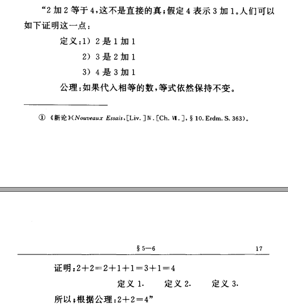

原文连接:https://www.cnblogs.com/yuanlianxi/p/12022703.html
程序语言编年史
概述
这次咱们聊下程序语言的发展史，除了程序语言，还会着重讲下程序语言密切相关的计算机的发展史，顺带讲下同时期与程序语言和计算机相关领域的发展,为什么要把程序语言和计算机相关领域放到一块讲, 因为这些领域和计算机的关系太密切了, 程序语言是程序员和计算机沟通交流唯一方式, 计算机的计算模型的发展, 还有计算机的应用领域的发展都对程序语言有着深刻的影响. 通过计算机相关领域的发展, 我们能从中可以找到一些影响程序语言关键因素, 看看这些因素是如何推动程序语言一步步发展成今天这个样子的.
计算机发展史
计算机的发展可以分为两条线进行追溯, 一条是计算理论的发展, 一条是计算机实体的发展, 下面我们看看计算理论和计算机的发展轨迹.
理论模型的演变
计算理论是近现代才出现的一个数学分支,主要研究可计算性,计算的复杂度,计算模型(计算理论中两大计算模型:图灵机,lambda演算),形式语言(编程语言也是一种形式语言).我们可以看到计算理论主要研究的对象的名字中有三个带了计算; 计算这个词很常见,好像和这些词汇所表达的意思挺相近:四则运算,数值计算,逻辑运算.本节就以计算为主线介绍下计算是什么,以及其演变历史,还有它和计算理论的关系.
史前数学：数值计算
公元前2500年,在美索不达米亚的一块泥板上记录着谷仓里面有1152000,每个人分7分,可以分给多少人,结果是164571,有余数.这是最早有记录的数学活动,可以猜想到史前的数学的用途:测量,记账,计数等等,都是一些简单的数值计算. 在这个时期, 数学中抽象出的数字及其相关运算操作都是直接对应现实世界中的实物某项具体性质(长度,数量,金额等)和对实物性质的操作（测量读数,计数,分配等）.
可见当时的数学抽象程度很低，使用的领域也都是和日常实践活动密切相关,而且都是数字计算.
第一次数学危机：逻辑证明的奠基
公元前五世纪,根据毕达哥斯拉学派的希帕索斯发现等腰直角三角形的直角边长与其斜边长不可通约(通约:两个量选取一个表示单位量的数后,两者不能同时被表示整数之比), 这个发现颠覆了之前毕达哥斯拉学派之前认为的"万物皆数(自然数)"的信条, 这就是数学史上有名的
第一次数学危机;就是这个不可通约数的发现还导致了一个悲剧, 毕达哥斯拉学派众人认为希帕索斯的发现是异端邪说,作为惩罚他们把希帕索斯淹死了, 因为真理被死亡的希帕索斯可能是科学史上的第一个, 但他却不是最后一个, 此后的哥白尼也没有因日心说被火烧死, 但是哥白尼同时期的其他科学家可能就没有那么幸运了.思考一个问题:希帕索斯是如何发现等腰直角三角形的斜边和直角边不可通约的呢?
设等腰三角形的直角边长为x,斜边长为y,根据毕达哥斯拉定理有:
2*x*x=y*y,进一步可推测出, x和y的关系2=(y*y)/(x*x), 满足左边等式的(y*y,x*x)有无限个组解,肯定存在一组解使得y*y或x*x为奇数,而且这无限组解肯定只属于下面这四种情况:1.
y*y为奇数,x*x为偶数
2.y*y为奇数,x*x为奇数
3.y*y为偶数,x*x为偶数
4.y*y为偶数,x*x为奇数,根据
上面四种情况和肯定存在一组解使得y*y或x*x为奇数进一步只分析使得y*y或x*x为奇数的情况, 只剩下了三种可能:1.
y*y为奇数,x*x为偶数; 代入原等式2*x*x=y*y, 如果偶数x*x乘以 2 得到的结果还是偶数, 和y*y是奇数矛盾, 所以此命题不成立
2.y*y为奇数,x*x为奇数; 代入原等式2*x*x=y*y, 如果奇数x*x乘以 2 得到的结果是偶数, 和y*y是奇数矛盾, 所以此命题不成立3.y*y为偶数,x*x为偶数; 和前提:只分析使得y*y或x*x为奇数的情况冲突, 此种情况不存在
4.y*y为偶数,x*x为奇数;由原等式2*x*x=y*y推出x*x=y*y*(1/2),y*y为偶数的话, 那么y肯定也是偶数,因为只有偶数的平方仍为偶数, 而且偶数的平方乘以二分之一仍为偶数, 和原来的陈述x*x 为奇数矛盾,所以此命题不成立.综上所述,直角等腰三角形的直角边和斜边不可通约.
我们现在回顾分析上述的数学活动过程, 从
等腰直角三角形,通约的定义,然后通过逻辑证明,最后得出等腰直角三角形的直角边和斜边不可通约, 这个过程中计算只参与了各个可能情况中的等值判断, 中间结果和最终结果的流转全是由逻辑证明推动的.从这个时期开始, 数学理论研究工作中的主要方法为推理,以及后来出现公理.比如欧几里得的<几何原本>,书中对几何的研究方法都是以定义和公理以及推理规则为基础.还有比较有名逻辑范式:亚里士多德的三段论. 以及斯多葛的逻辑证明的推理规则如果 命题A 那么 命题B和命题A可以导出命题B.就是这些基础的逻辑范式或者叫推理规则或者正式点叫命题逻辑, 为以后的数学大厦奠定了夯实的基础，后面我们会继续介绍逻辑在数学计算发展史中所发挥的重要作用.前面的讲述提到的
计算其实只参与推理活动需要数值判断的部分;和数学理论研究相反的是实践活动中的数学,计算承担了其中的大部分工作.计算参与数学实践活动有一个比较有名的例子就是欧几里得的辗转相除法求两个数最大公约数,这个计算模型包含了得出最大公约数的能力同时也隐含了最大公约数的推理证明.辗转相除法的计算模型简化了求最大公约数的过程和证明其为最大公约数的过程, 从这里我们似乎看到了计算和证明的一点点模糊关系.另外值得注意的是这次的数学求解活动将现实中具体问题与数学中抽象的问题完全分割开来,因为此次求解涉及的概念完全是从对现实问题的抽象(数学中的计算,测量,分割)的抽象(对从现实抽象而来的数学概念再次抽象)而来,这次求解开辟了对纯粹的数学抽象概念的研究, 断开了与现实问题的直接连接, 比如这次数学活动中的
等腰直角三角形这个概念, 这个概念不涉及任何具体的三角行, 活动要研究的是所有等腰直角三角形的特征,而不是某个具体的等腰直角三角形的特征. 以后的数学所研究的领域也大都是此类从现实问题抽象而来再次抽象的数学问题, 虽然这样的数学问题普适性更广, 也越接近本质, 但是这也是数学为什么这么让人费解犯难的原因之一吧.
数理逻辑时代,从谓词逻辑到计算理论:逻辑证明 = 计算 + 不可停机 ?
我们接着来说逻辑证明的发展情况,从中世纪开始一直到20世纪,逻辑证明在历经各位哲学大师的雕琢下,愈发的闪亮, 当然也愈发的让人为难了.我们前面提到的
命题逻辑也进一步的演化为谓词逻辑,最终演变成今天的数理逻辑的样子.
逻辑证明的符号化尝试
命题逻辑以后很长一段时间,逻辑证明在数学史的发展都没有出现新的成果,直到17世纪德国的莱布尼茨首次尝试将逻辑证明进行符号化,公理化.但是很遗憾的是他没成功,不过这次尝试给逻辑证明带来了新的方向:将逻辑证明数学化; 再后来布尔发明的布尔代数通过将命题进行布尔运算组合后判断真假，同时布尔也发明了一些运算符号来抽象运算规则。
谓词逻辑
后来到了19世纪末期,弗雷格在前人的基础上对命题逻辑进行了更加细致完备的完善工作, 他提出将命题逻辑的命题中关系谓词所作用到的实例进行变量化和替换, 然后再用量化词存在或者任取对变量化后的实例进行范围的限定修饰, 这样不仅消除了命题逻辑中的模糊性, 而且可以根据演绎规则如果 命题A 则 命题B对变量替换后的谓词逻辑模板所生成的新命题进行真值推断.弗雷格另一个突出的逻辑证明的实践贡献,就是弗雷格希望能为自然数提供一种纯粹逻辑的理论，从而将算术、微积分的所涉及的问题乃至一切数学问题都进行逻辑化. 比如2+2=4, 他认为即使是浅显基础的数学公式,也应该用严格的演绎推理来进行证明,而不是用归纳总结来确证.
弗雷格的<算术基础>中根据定义和公理给出了2+2=4的演绎推理证明:
2+2=4
判定问题的出现
弗雷格将数学进行逻辑化的工作看起来没有什么太大的问题，但是和弗雷格同时代的数学家罗素发现了关于弗雷格所抽象的集合的集合的一个悖论：我们就可以构造一个集合R，它包含所有不是自身元素的集合。接下来就可以证明，我们假设R不包含自身，那么R实际属于一个不包含自身的集合，那么R实际应该被包含，这与假设矛盾；我们假设R包含自身，这直接就和R的定义矛盾；这样一来集合R既不是自身的元素，又是自身的元素。这个悖论就是有名的罗素悖论，这个悖论的关键点就是自指:自己引用自己，就是这个自指粉碎了数学家希尔伯特的一个美好的希望：用逻辑将数学构造成一个完备且一致的形式系统，并且存在一种算法可以判定所有数学命题的真假；这就有名的希尔伯特计划23问中的第二问和第十问关注的内容。其中第二问完备性和一致性被一个叫歌德尔的家伙用自指这个技巧否证了：一致性和完备性不能共存，要么一致不完备（没有矛盾，但是存在不能被证明的命题），要么完备不一致（存在矛盾），例如命题:本命题不可证明.关于是否存在一种算法可以判定所有数学命题的真假这个希望也被同时期的另一个数学家图灵的以等价的停机判定问题被证伪了, 其中停机判定问题的证明也用到了自指这个技巧://假设存在一种算法Decidable,可以判定所有程序是否停机 //参数program是需要被判定程序,input是被判定程序的输入参数,返回值为Boolean, true为判定为可停机, false 判定为不可停机 Decidable(program,input); //我们定义一个程序:Undecidable Undecidable(program,input) { if(Decidable(program,input)) { return Undecidable(program,input);//或者while(true); } return true; } //我们给Undecidable传参Undecidable,Param;进行执行 Undecidable(Undecidable,Param={}) //根据以上定义和调用观察, 我们发现在 //Undecidable内部使用Decidable判断自身是否可停机时发生了矛盾: //1.假设Undecidable可停机, 但是在Undecidable(Undecidable,Param={})的调用执行的过程中陷入了死循环或者无限递归调用.与假设矛盾 //2.假设Undecidable不可停机, 但是在Undecidable(Undecidable,Param={})的调用执行的过程中却返回了true后,终止了自身.与假设矛盾 //由此可断定不存在一种算法能判定其他程序是否可停机, 我们用反证法和用自己判断自己进行了证明, 其中自己判断自己也是属于一种自指说到可判定性问题,正是希尔伯特的这个问题和后续的数学家图灵,邱奇等的研究,使得数学中把计算作用于数字,函数,欧几里的几何等研究方式基础之上扩展出了新的
将计算作用到计算上.将计算作用到计算上这个新的扩展需要明确计算这个概念,那计算到底是什么呢? 20世纪30年代的数学家们给出了若干不同的定义：法国数学家雅克·埃尔布朗和库尔特·哥德尔提出了“埃尔布朗–哥德尔方程组”，丘奇提出了“λ演算”，图灵提出了“图灵机”，斯蒂芬·科尔·克莱尼则提出了“递归函数”……所有这些定义都是等价的，并且或多或少都把计算的过程描述为一系列变换步骤。此刻我们也可以将计算称呼为算法，但是为了上下文保持一致后文仍旧以计算这个词作为描述对象进行解释说明. 之前提到过的一个例子：辗转相除法求最大公约数。最终结果就是由一系列提前设计好的按照一定规则变换步骤得出的，但是这些步骤除了需要能得出最终结果外，还需要有一个限制就是：可停机，也就说一个计算必须要能在有限步骤的转换后得到一个结果。
我们刚刚说明了计算的定义，将计算作用到计算上这个转变使得数学家开始关心计算到底是什么，以及计算是否和逻辑证明具备一样的能力，从前面的停机例子可以看出计算的能力还是无法等价于逻辑证明，至少明确了计算和逻辑证明是两个不同的概念。数理逻辑和计算理论也正是从这个时候被单独作为一个科学分支进行研究。
总结一下，计算从解决最基础的日常生产中的实际问题开始，此时的计算在数学中占据主要位置；时间往后一点，这个时候数学开始过度到与现实问题不再那么紧密的二次抽象问题上研究，计算在这次过度中其在数学中的重要性被逻辑证明取代，计算似乎只是一种逻辑证明过程中的辅助工具；数学界花费了很长一段时间对逻辑证明进行符号化公理化，他们再这段时间里发现这个目标的实现存在太多问题，其中最严重的问题就一些由自指带来的逻辑悖论，这些逻辑悖论产生的背景其中有一部分是涉及到计算的，这些关于计算的悖论的证明过程让数学家明确了计算是什么以及计算和逻辑证明（演绎推理）的区别，对计算机影响深刻的各种计算模型（图灵机，lambda演算等）也是在这个时期诞生的，关于计算和逻辑，数学和计算机理论中也建立了新的分支：数理逻辑，证明论，计算理论。本文中计算的发展就讲到计算理论的诞生，关于数学计算的研究仍在继续，新的征程：去公理化，自动化证明……
另外我们也可以看到关于计算的抽象级别在逐步降低，而其通用性变得越来越广。从一开始的应用在被抽象成数字的现实物体上的计算规则：计数，分配等；然后又从现实问题中抽象出的数字之上又抽象出数字间的关系：不可通约；类似这种抽象之上的抽象问题开始变得越来越多：逻辑证明的符号化，逻辑证明的一致性和完备性，以及计算是什么，将计算应用到计算之上，这些问题的提出和解决明确了计算的边界，通用计算模型也在此时登场：图灵机，lambda演算。抽象级别的降低使得我们在直接理解这些计算模型时出现了抽象和因果时序关系的断层，所以为了大家能够对计算有个整体的理解，有必要还原一下计算的发展历史，这有助于我们后面讲述计算机和程序语言的发展和演变。后面我们会继续看到抽象在计算模型和计算载体实现上的转变和抽象级别的再次降低，而程序语言的抽象级别的演变却是尝试将抽象还原到与现实问题同等的水平。
计算在生产活动中的实践:通用计算机的诞生
计算工具的出现大大提高了人类的计算效率,从最初的使用直接对现实观察的方式进行测量计数;进而出现了的专用的数字运算工具:算筹,算盘;然后又出现了更高级的专用半自动计算工具:计算尺,机械计算器;最终计算工具的进入了理想形态:通用计算机.
下图是计算工具发展史中的几个关键点:
上表中我们可以清楚的看到计算工具的逻辑载体从机械过渡到电子继电器进而最终发展成电子设备,其中的计算规则的执行也逐渐由机器的自动化执行取代了人工操作;计算工具的计算能力的适用性也由专用的领域拓展到了通用计算.
在计算机的发展历史节点有一个关键点那就是图灵机和lambda演算的出现, 而且这两个模型在同一年被提出, 这两个计算模型都是图灵完备的, 我们在上一节中也讲到过这两个计算模型和计算的能力是等价的. 有意思的是图灵机给现代的程序存储计算机提供了最早的计算理论模型. 而lambda演算作为一种原生形式语言给程序设计语言提供了函数编程范式.
此处重点介绍下图灵机和lambda演算，因为图灵机影响了现代计算机的架构，而lambda演算影响了现代程序语言。
图灵机
图灵机是什么
图灵机是一种状态机,所有计算(前面我们已经定义过计算,阐述过计算的能力)能做的事情, 图灵机也能模拟完成.现代计算机的计算能力和图灵机的计算能力是等价的, 现代的计算机就是受图灵机的原理一步步发展成现在这个样子的.
图灵机的结构
图灵机实现计算的方式是根据自身定义好的状态转换集合,一步步根据纸带上的字符输入,来切换自身当前的状态,改写纸带上的字符移动读写头,图灵机的输入输出都是在一条可以进行读写字符的格子纸带, 最终的计算结果也是靠纸带上字符呈现的. 实际上图灵机的主要结构就是一个无限长的用来记录输入和输出的格子纸带(计算机的内存) 和 一个具有状态转换集合并且可以左右移动的读写头(和cpu很相似, 状态转换集合可以看成cpu的指令集, 左右移动的读写头可以看成cpu对内存进行随机读写)
图灵机的能力图灵机的定义和计算的定义是等价的, 而且它们的执行过程也很相似, 都是对状态进行一步步的转换. 在用图灵机进行计算时, 其中有一个关键的要素, 就是如何将实际问题抽象转化为图灵机可解的计算模型, 这有和我们通过程序语言模拟建模现实问题的解决方案是一样的. 我们知道在使用程序语言进行解决问题时有两个比较关键因素决定了程序的实现难度:一个就是数据结构, 一个就是算法.在图灵机中, 原生的数据结构就是一条可读写字符的格子纸带, 原生算法就是状态转换以及对纸带的读写.
使用图灵机进行计算的步骤:
1.从现实问题中抽象出参与计算的实体,比如数字加法运算中的数字, 你可以将数字定义为纸带上写有1的连续格式的数量, 比如3就是111, 2就是11,6就是111111,依次等等; 当然还要定义算法操作符, 操作符可以选取字符中加号:+
2.定义算法,定义算法时需要根据前面一步中定义的实体的自身特点来进行实际算法实现;比如加法,根据上面对数字的定义, 那么加法的可以定义为读写头擦除第一个数字1,然后读写头向右一直移动到加号+处将+号改为1,最后读写头向右移动到空白处停机; 此时纸带上1的个数就是此次运算的结果.
lambda演算
lambda是什么
lambda演算是一个用来实现计算的数理逻辑形式系统. 其核心就是基于符号替换和转换规则来实现计算.
lambda的组成
lambda表达式和以及针对lambda表达式的转换规则(也叫规约)
下面是三个基础lambda表达式项
λx中的x是参数, x*x 是函数的计算表达式函数:上面(λx.x*x)就是函数, 后面x*x的表达式可以换成变量或是函数, 或者函数调用变量: 上面函数中的参数x, 还有计算表达式中的x, 都叫做变量函数调用:比如上面的函数λx.x*x, 现在将此函数命名为:M,那么M此时就代表了函数λx.x*x, 那么现在将表达式项N作为参数传给M,N可以是常量, 函数, 或是函数调用, 函数调用的表达式是:(M N), 函数调用在应用α转换和β规约后的结果可以是常量(在lambda中常量实际也是由函数抽象表示的)或是函数
两个转换规则:α转换:为了避免函数之间在函数调用中的命名冲突, 函数中的变量名可以同时转换为其他名称, lambda函数在进行α转换前后是等价的, 举个例子 比如λx.x*x, 对其进行α转换将其中的x替换为y, 则转换后的函数表达式为λy.y*y.那么λx.x*x和λy.y*y是等价 再看一个复杂的例子β规约: ((λx.M) E) → (M[x:=E]) 在函数调用后, 将函数参数参与的表达式中的变量替换成实际变量, 举个例子((λx.x*x) 3)β规约后3*3, 其中在这里面3为自由变量, x为绑定变量, lambda的运算何时停止, 就是将所有可绑定自由变量的绑定变量进行β规约直至没有可成对出现的自由变量和绑定变量, 另外lambda的运算在没有括号的情况下, 运算优先级是从左到有, 有括号先对括号中的表达式进行运算.
还有一个附加的转换规则:η-规约:如果有两个函数λy.y*y和λx.x*x, 对于任意参数x,y, 如果x==y, 且λy.y*y和λx.x*x应用相等参数后得到的结果也相等, 那么我们可以认为λy.y*y==λx.x*x

lambda如何实现计算
介绍完规则, 咱们再看下lambda如何实现算术计算的
先定义一下数字,
0=λf.λx.x
1=λf.λx.f x
2=λf.λx.f (f x)
3=λf.λx.f (f (f x))注意最右边的 x, 这个 x前有个空格, 这些数字的定义出来的表达式实际上是函数调用, 但是没有进行转换
然后我们再定义一下另外一个概念, 数字的后继, 例如0的后继就是1,1的后继就2等等
数字后继的lambda表达式定义:SUCC=λn.λf.λx.f(n f x)
括号中的n是一个具有一个参数n的lambda函数,其演算最终结果是一个具有两个参数的lambda函数(参数f和参数x是固定参数, 不能进行实际传参),参数n 代表一个数字,这个数字就是函数要针对其计算后继, f 和 x是固定字符参数,n是一个可变参数, 这样就可以根据0和SUCC的定义计算出所有自然数
有了这个定义, 我们按照上面这些定义计算一下, 0的后继是多少
先将n替换为0的函数表达式:
λn.λf.λx.f(n f x) 0//传 0
λn.λf.λx.f(n f x) λf.λx.x//将0的lambda抽象替换按照运算顺序的优先级先对括号中函数调用进行
β规约:
λf.λx.f ((λf.λx.x f) x)->λf.λx.f (λx.x x)//为了表明运算优先顺序,加了一个辅助括号
λ f. λ x. f (λ x.x x)->λf.λx.f (x) ->λf.λx.f x `//括号可以去掉,如果括号中的符号和外部符号有相同的名称,可以用α转换解决冲突, 因为本表达式中的括号中符号名和外部符号名不存在冲突,所以可以直接去掉`
因为表达式不存在可绑定的自由变量和绑定变量就可以停止计算了,最终得到了λf.λx.f x, 也就是1的lambda表达式抽象.定义完自然数, 咱们就可以定义加法了:
PLUS = λm.λn.λf.λx.m f (n f x)
上面表达式中的参数m和n就是两个相加数字的参数, 代入数字就可以进行演算了,比如3+2:
- λm.λn.λf.λx.m f (n f x) 3 2
- λm.λn.λf.λx.m f (n f x) (λf.λx.f (f (f x))) (λf.λx.f (f x))
//为了避免命名冲突, 把3和2的的实际参数lambda表达式用括号括住了- λf.λx.((
λx.f (f (f x))) ((λf.λx.f (f x)) f x))//把3和2传进去, 同时去掉可绑定参数m和n,并将表达式中的m和n替换为3和2的lambda表达式, 另外因内部的x与f和外部的x和f有命名冲突所以用括号框住了,另外为了方便观察3和2的实际位置, 特意用红色标注了下3和2的lambda表达式- λf.λx.((f (f (f (
λf.λx.f (f x)f x)))))//根据运算优先级, 将右边的表达式((λf.λx.f (f x)) f x))传给2的表达式λx.f (f (f x))的x中, 去掉绑定参数λx,并替换表达式中的x参数- λf.λx.(f (f (f (f (f x)))))
//将最内层的两个自由变量, 进行调用,最终结果就是左边的lambda表达式, 此时没有任何可绑定的自由变量存在, 所以运算停止, 最终结果就5,大家可以用后继lambda表达式来验证下上边的表达式是不是5的lambda表达式
上面展示的只是lambda演算的算术计算能力, 在合适抽象出数据类型后, lambda不止能进行算术计算, 还能进行其他很多运算比如布尔运算, 递归调用等.
介绍完图灵机和lambda表达式, 可以看出图灵机的运作模式就是一台按照一个固定规则进行运作的机器; 而lambda演算更像一种具有一定文法规则的符号系统, 有一点点语言的感觉. 另外我们在这两个计算模型在实现计算的流程中都经历了数据结构的定义和转换规则的定义,然后按照转换规则对输入的数据结构进行处理输出,这也很我们在写代码时定义数据结构和算法很相似, 再联想一下, 这个过程和我们解决问题也很相似, 根据问题现状, 找到目标, 定义解决方案, 然后根据解决方案中实施步骤执行,最终得到结果.
程序设计语言的发展史
在上面两个经典的计算模型产生以后没几年, 通用计算机就被造了出来:马克一号. 现在我们思考一个问题, 具有计算能力的机器已经有了, 那我们如何使用这台机器呢?--机器指令,当时使用这台机器的方式是通过把机器指令和数据编码后按照执行的顺序存储到打孔纸带,然后将纸带输入到计算机中实现计算.这种使用方式很麻烦, 指令打印错了以后要么用胶带糊要么可能整个纸带都需要换掉重打,工作量太大,耗材也太浪费了,而且不方便阅读,调试(说的有点远了嘿嘿).
按照顺序排列在打孔纸带上的指令, 这就是最初的程序设计语言, 虽然太难读; 那会有一个叫葛丽丝·霍普的女程序员(在马克一号上写代码)就感觉直接在纸带书写指令太麻烦, 就想着能不能直接用人类的语言(前面说过自然语言是一个形式系统,本身具备计算能力)来写程序呢, 于是她就开始了这方面的尝试, 我们常说好事都会发生在别人身上, 果不其然, 她在1951年-1952年做出了第一不完整编译器 A-0 System, 这个编译器内部预置了功能函数, 程序员只能使用这些功能函数, 最终A-0会将代码转换成内置的功能函数的二进制指令, 有点像编译器中链接功能.虽然这个编译器的功能很弱,但是用人类的语言来书写程序的这个想法, 使得程序设计语言和编译器从此开发生根萌芽,一直到现在的百花齐放. 另外有一个让人拍手称快的消息, 这个女程序员发现了史上第一个bug(一个飞蛾), 很嘲讽有么有.
在编译器的概念被提出后, 没过几年, 1956年第一个高级程序语言fortran面世. fortran 支持变量和高级命令语句(IF DO),
变量是对内存的抽象, 命令语言是对计算机指令的抽象. 把对硬件的直接操作抽象成了一种形式语言,而编译器最终将代码语言翻译为机器指令,编译器的翻译功能可以看成形式系统的转换规则,那么编译器和程序设计语言两者则组成了一个形式系统.
有意思的地方来了, 一个形式系统(逻辑上具备计算能力)运行在一个真正具备计算能力的机器上(通用计算机,逻辑门电路实现),而形式系统的最终算力实际来自机器,最终的计算结果是机器指令;另外一个有意思的地方,被翻译后的机器指令(可以看成一种形式语言)和计算机(逻辑电路的电信号的转换)再次构成一个形式系统,最终算力来依然来自于计算机,转换规则由编译器提供,也可以看成算力由编译器提供,最终计算结果是内存和各种输入输出设备的状态变化; 还有一个我们最容易忽略的有意思的地方,那就是程序设计语言和程序员的实际也是一种形式系统,算力来自程序员自身,最终计算结果是带有bug的代码,嘿嘿嘿.
最终上面三套形式系统涉及的各个具备算力的对象因为程序设计语言和编译器(逻辑算力)关联串在一起,下面是三个形式系统转换元组(形式语言,转换规则,结果)之间的转换关系
(程序设计语言语法,程序员,程序设计语言代码)->(程序设计语言代码,编译器,机器指令代码)->(机器指令代码,计算机,内存和各种输入输出设备的状态变化)
经过上述过程,人类就可以通过程序设计语言告诉计算机如何计算.
fortan作为高级语言抽象出了变量和语句两个新概念, 后面的程序设计语言都继承了这两个最基础的概念, 并且在这个基础之上发展出来很多其他概念,下表是按照时间先后顺序列出了一些程序设计语言中一些概念出现的时间点和背景.
这里面有很多概念不是由语言直接支持的,而是由语言之上的api库来支持, 例如设计模式,aop,ioc等等. 不过像面向对象,接口,异常这些概念在刚提出的时候当时的编程语言也是不支持的, 是后来程序员发现这些概念在解决问题时特别常用,然后就把这些概念加入到了语言当中. aop,ioc,设计模式等等这些概念会不会得到语言自身的支持, 这还得看语言和语言的使用方式的发展了.值得一提的是观察者模式在C#中直接通过语言的概念提供了支持, C#提供了 event和delegate 关键字来提供了支持.
在程序设计语言这个形式语言中, 各种概念的加入丰富了编程的乐趣,不过带来的更多的是以不同的视角对现实问题的抽象建模的可能,这些概念提出的背景可能涉及很多:代码的可维护性,扩展性,稳定性,复用性,可读性,性能等等.最终这些概念解决了提出它时所要解决的问题,但是也引入了其他问题,当然也没有一个万能的概念能解决所有问题,更多是写代码的人要思考如何使用这些概念的排列组合来解决一个个现实问题.不过这些概念有一个共同的特征,那就是这些抽象出来的概念越来越接近以人类看待现实问题的特点.
计算贯穿了本文的始末,我想也只有这样来写程序设计语言比较合适,因为程序设计语言因为计算而生,然后又是为了计算.有没有感觉刚才的解释形成了一个环, 其实不是, 第一个计算是出于人和计算机之间的沟通,第二个计算是通过代码建模解决实际问题.
不过另外一些问题倒是挺有趣的, 那就是如果以计算来看待这个世界,人具备计算能力,而且创造具备计算能力的机器. 计算机的计算能力来自于人为设计,那人的计算能力来自于何方, 是计算本身吗? 计算机的计算能力是为了帮助人类解决现实问题,那人类的计算能力的目的是为了什么, 是为了人类自身吗?